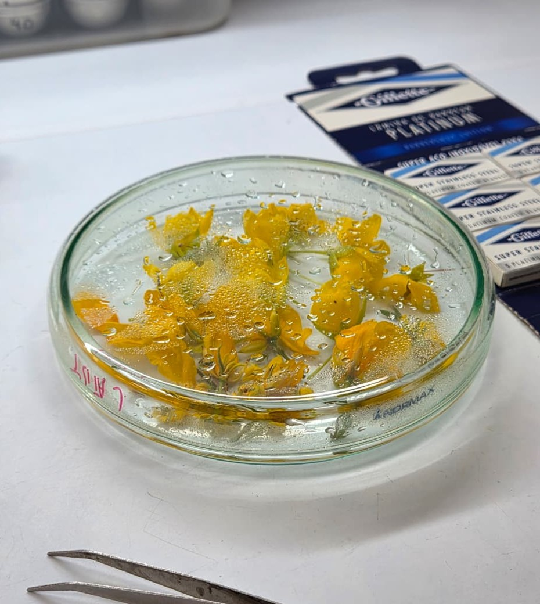
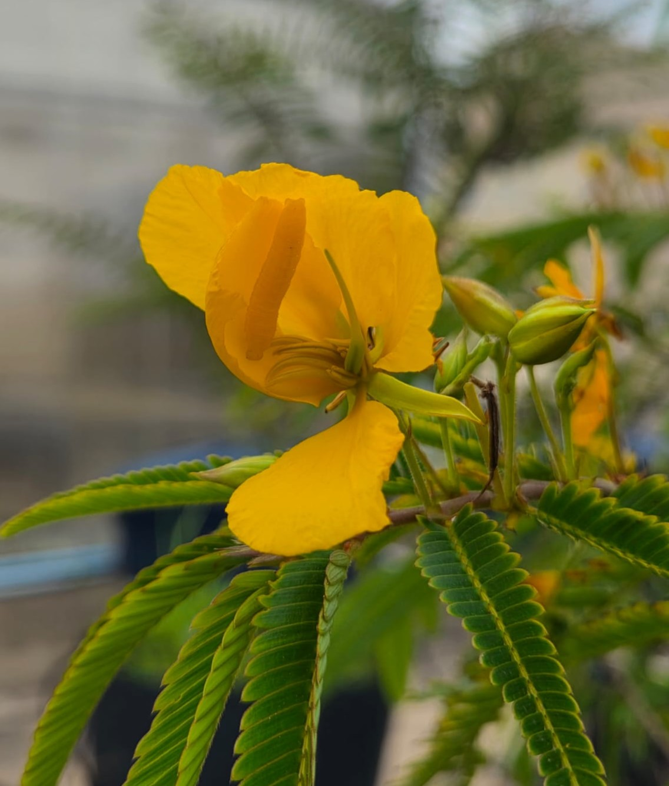
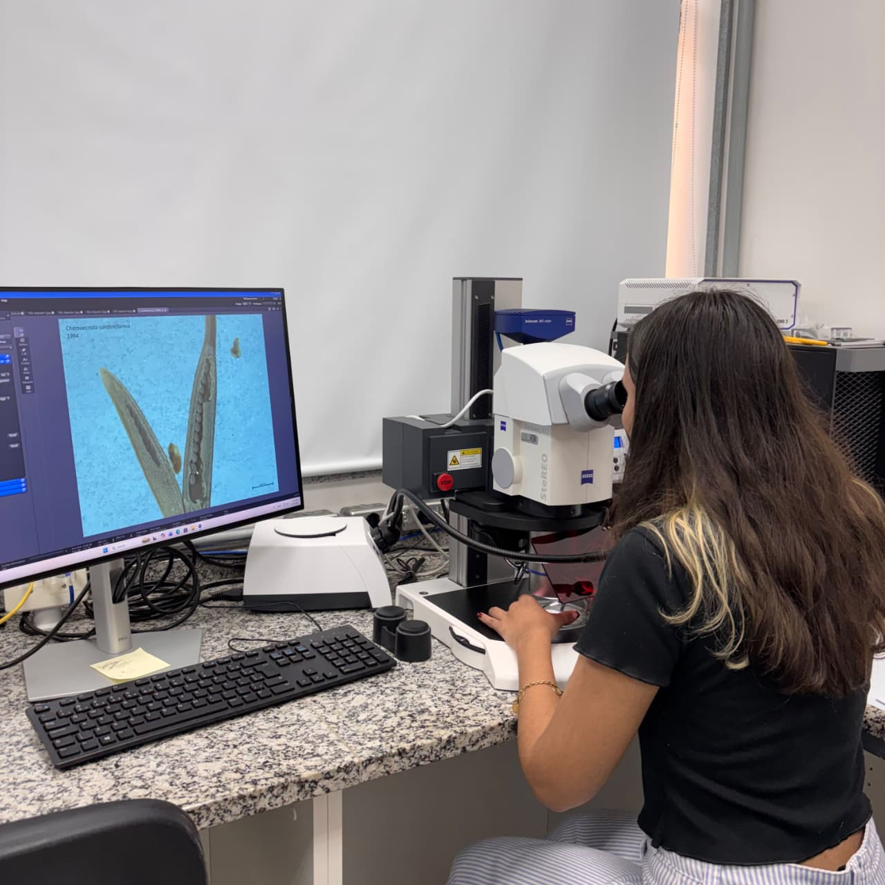

Emilly Carlos de Lima
Iniciação Científica pela Universidade Federal do ABC (UFABC)
- Morfologia floral
- Polinização por vibração
- Alometria
Sobre
Trabalha com o gênero de leguminosas Chamaecrista, em especial as espécies C. latistipula e C. nictitans, tendo como objetivo do projeto investigar a alocação da biomassa total das flores dessas plantas entre suas estruturas reprodutoras femininas e masculinas, especificamente como ela pode variar de acordo com o tamanho delas e a disponibilidade de água do ambiente. O projeto aborda temas como seleção sexual, alometria, morfologia de flores de pólen, entre outros.
Estando na graduação interdisciplinar em Ciência e Tecnologia e Ciências Biológicas pela Universidade Federal do ABC, é uma das alunas de Iniciação Científica, tem interesse em pesquisas sobre biologia reprodutiva de plantas e polinização. Além disso é uma leitora assídua de fantasias e romances, adora filmes e é swifitie de carteirinha :).
Trajetória no LIPA
Clique em uma etapa para ver detalhes.
2025– · UFABC
- Orientador:
- Anselmo Nogueira



